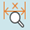

Check the automatically generated dimensions
You can check the status of the model dimensioning in the part and sheet metal environments.
Prerequisites
Create the dimensions using the Auto Dimensioning command.
Procedure
-
Choose the PMI tab→Assistants group→Dimension Checker

command.The dimensions created by Auto Dimension command are identified for constraint analysis with respect to datum faces for location dimensions, and individually for size dimensions. The dimension checker panel appears.
-
In the dimension checked panel, select any of the following:
-
Under constrained
-
Over constrained
-
Missing tolerances: To display the dimensions without tolerances
-
Fully constrained
-